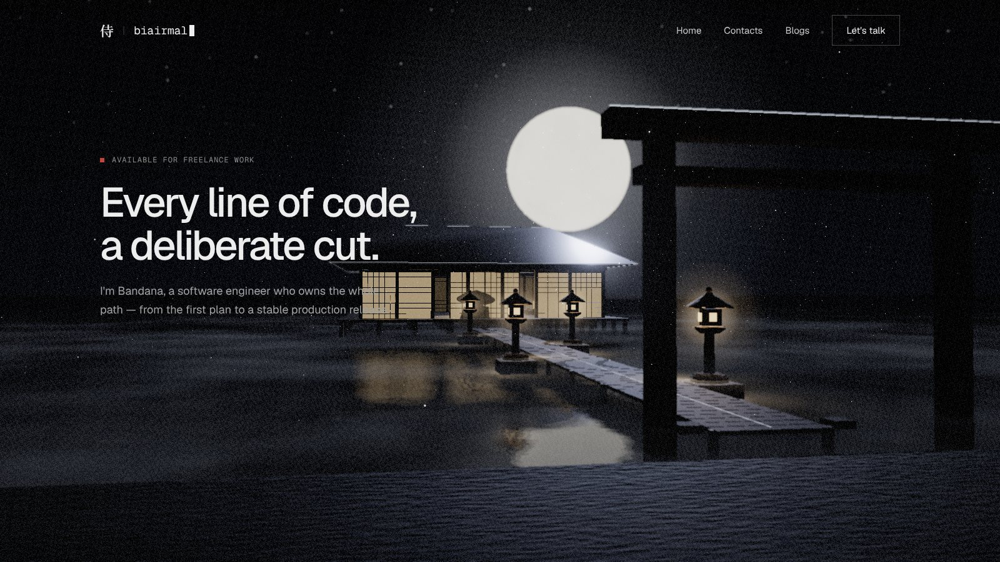
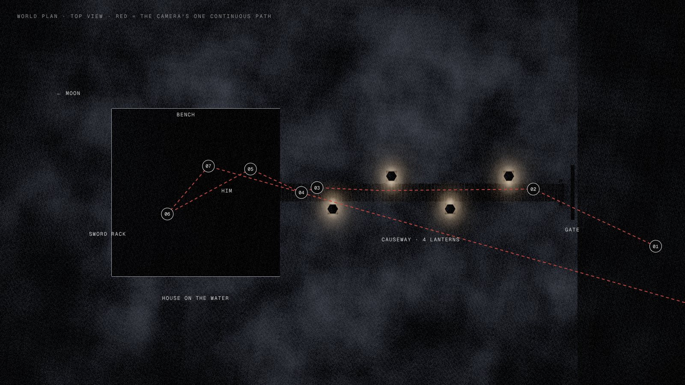
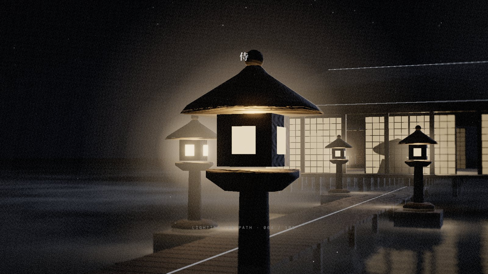
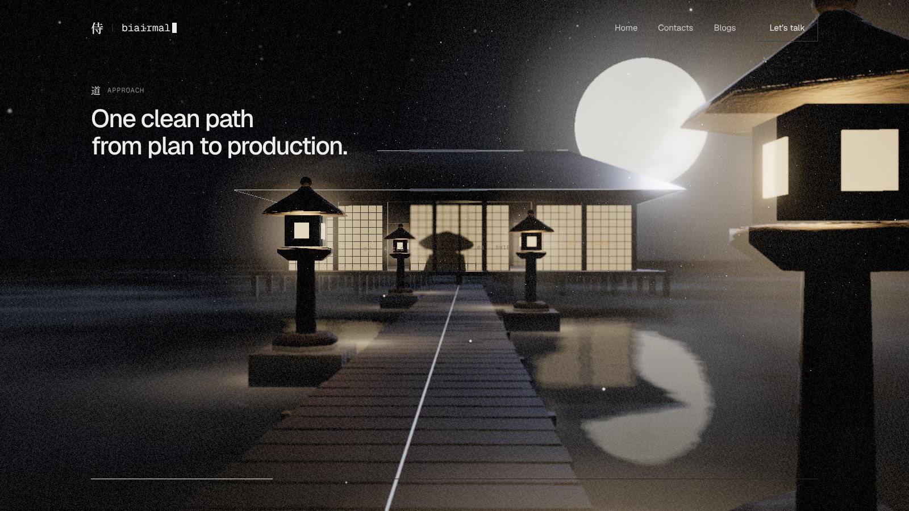
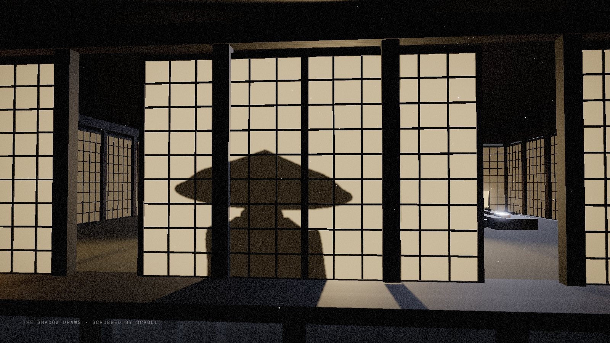
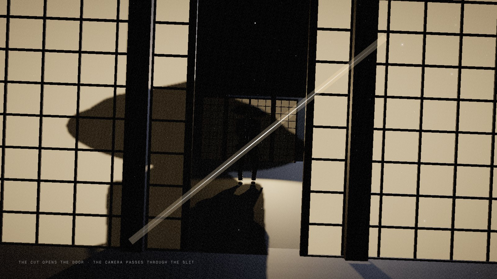
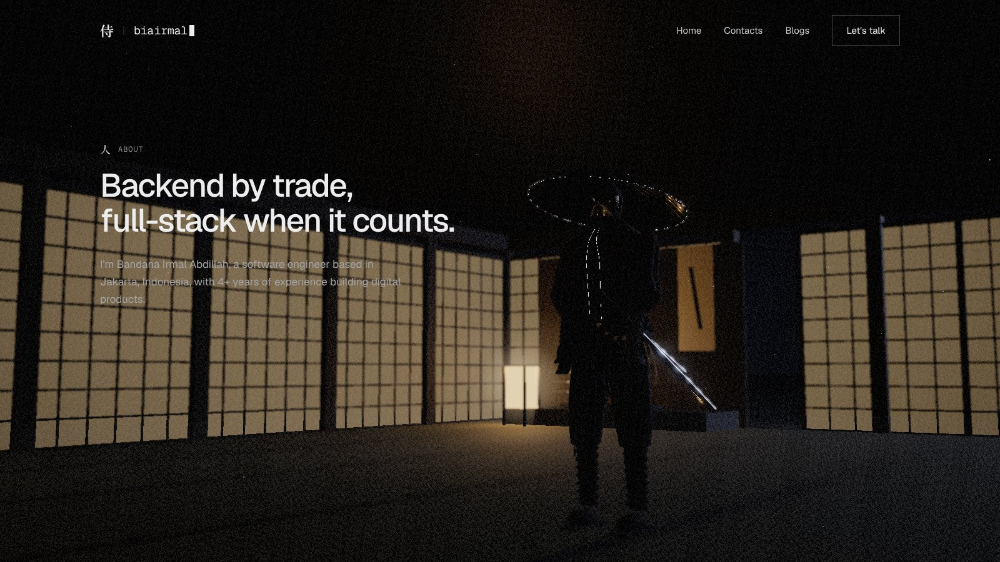
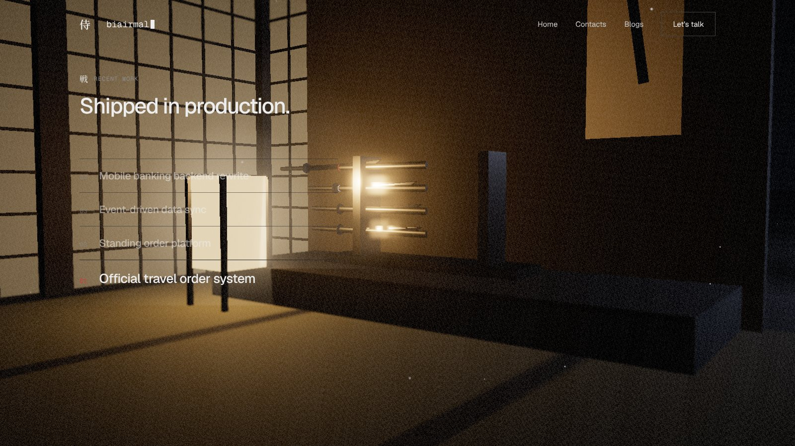
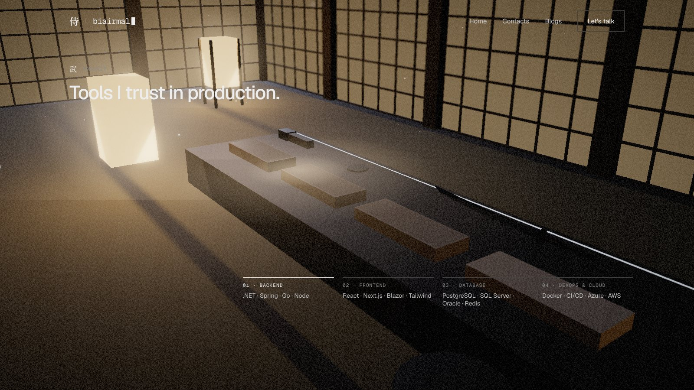
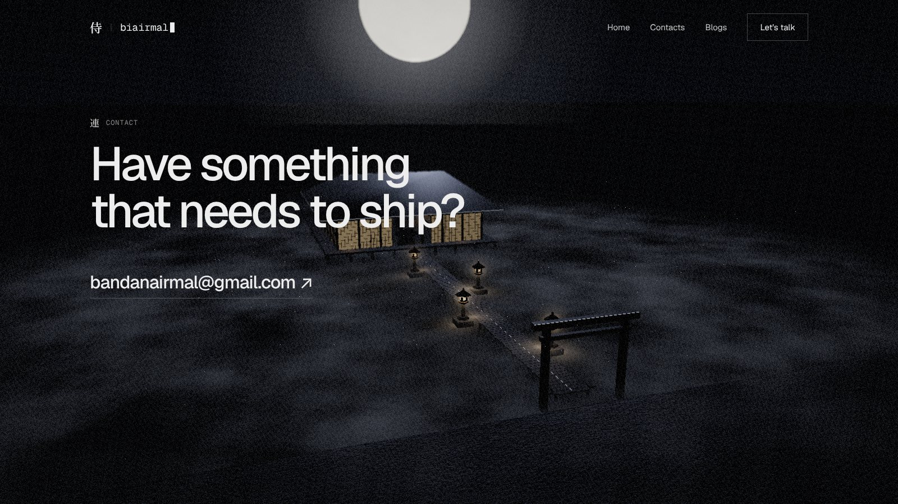

Design phase · alternative storyboard · v5
This is an alternative to v4. Instead of separate sets floating in the dark, the whole site is one place you travel into: a gate on the shore, a causeway of lanterns, and a house standing on a lake. Inside is the person, his swords, and the bench they were sharpened on. Every section is a step further in, and each thing has a reason to be where it is. The samurai stands still the whole time. The camera and the world do the moving.

Shot 01 · real-time previz render · placeholder geometry, the ronin from v3
改What this fixes
地The world
The camera never cuts. It travels forward through the gate, along the causeway, through the door, around him, and up out of the house. The red dashed line is the path, and each circle is a shot where it pauses.

The site's sections are reordered to follow the journey: Hero → Approach → About → Work → Toolkit → Contact. Approach now comes before About because it is literally the path you walk to reach him.
絵Shots

Black screen. One lantern flame catches, and the counter reads 064 / 100 · lighting the path. As it loads, the other three lanterns light one by one down the causeway.
His shadow is already there on the far paper wall, small and soft. The first frame of the site tells you someone is waiting inside.
At 100, focus racks from the lantern to the house and the camera pulls back into shot 01. No cut.
The gate frames the view. The causeway and its four lanterns lead to the house, with the moon behind its roof and everything doubled in the still lake. You can see where you're going before you start.
Mist drifts across the water, lantern flames flicker gently, and the camera leans a few degrees toward your cursor. Nothing else moves, so the stillness is the point.
The first scroll pushes the camera through the gate. The gate passes overhead, a moment of framing that says "you've entered".

The causeway is the "one clean path from plan to production". Its four lanterns are Plan, Build, Ship and Sustain, standing on alternate sides. You pass each one as you scroll, and its card rises beside it.
As the camera passes a lantern, it brightens slightly and its warm pool spreads across the planks, a small "you are here". A hairline along the bottom fills with a 01 / 04 counter.
The house gets closer the whole way, and his shadow on the paper gets bigger. The section is a slow approach toward a person.

The camera stops at the door. On the paper, his shadow grows huge: a lamp behind him throws it onto the doors. Your scroll scrubs the draw. You see the hand go to the hilt, the step, and the blade sliding out, all in shadow.
A silhouette hides everything that's hard to animate (cloth, fingers, faces) and keeps only the shape of the motion. It's also a classic image of Japanese theatre and cinema.
A real spotlight behind him casts his real shadow onto a layer on the door. It moves exactly with the animation, so nothing is faked.

The shadow's rising cut ends in a slash of light across the paper. The slit glows, then the two door panels slide apart and warm light spills out over the veranda.
In v4 the whole screen was sliced. Here a real object in the world is cut, and the cut opens something. That's the story beat: the cut is how you get in.
The camera pushes through the opening as it widens, with a slight roll. No cut, no fade.

Inside, in warm lamplight. He stands in the middle of the hall facing the door you came through. The camera circles him slowly while you read.
Only idle breathing and cloth. His kasa catches the lamp. The quietest shot of the film.
The next two shots, the alcove and the bench, are both a few steps from where he stands.

Four projects, four swords, resting in the place of honour: the tokonoma alcove, under a scroll with a single brushstroke. Each one is finished work.
Opening a row in the list draws its sword a hand's width from its scabbard, with a glint along the edge, and turns its scabbard ring red. The camera eases toward that sword.
The camera leaves past his shoulder, so you always know where you are: still in his house, a few steps from him.

A sword is only as good as its tools. The bench holds four whetstones, coarse to fine, one per group: Backend, Frontend, Database, DevOps. A blade lies across the finest stone. These are the tools behind the swords you just saw.
The camera tracks along the bench as you scroll. The stone in view gets a wet sheen and its group lights up in the list. A drop of water runs along the blade.
The orbiting tsuba ring from v4, which didn't belong to anything. A bench of stones is real and means something.

The camera rises up out of the house and pulls back over the lake until the whole world is in frame: the house glowing on the water, the lantern path, the gate and the moon. It's the same world you entered, now seen whole.
Hovering the email brightens the whole causeway, every lantern, like a path being lit for a visitor. It invites them to walk the same path you just did.
"Back to top" flies the camera back down the causeway to the gate, at 4× speed.
型Rules for this version
| Topic | Rule |
|---|---|
| Samurai | He is at one spot in the hall for the whole film. He never walks. The animation used is idle breathing and the iai, which is only ever seen as a shadow on the paper. Polishing animation is optional: the shadow play hides its flaws. |
| Camera | One continuous path, no cuts. Each section is a pause on the path, and scrolling between sections is travel. Hand-placed curves (Catmull-Rom) through the shots, so the path never clips through walls. |
| Lighting | Two colours only: cool moonlight outside and warm lamplight inside, with paper walls between them. Every lamp is an emissive object plus a glow sprite and a light pool on the surfaces below, identical on all devices. Real point lights are a desktop extra and never switch on or off. |
| Moving parts | Sliding doors, flickering flames, drifting mist, water and dust. These are cheap, robust and everywhere, so the world feels alive while the character stays still. |
| Performance | One house, one causeway, one gate: far less geometry than v4's four separate sets. The interior and exterior are visibility-culled based on which side of the door the camera is on. The phone settings from the last pass still apply. |
| Moon | Kept, but it never changes phase and there's no eclipse. It's the backlight for the house and the lake. |
問Decisions for you
/experimental with v5, or keep v4 there and build v5 at /experimental/v5 so you can compare them on your phone?侍 · biairmal storyboard v5 · real-time previz renders (design/previz/scene3.js) · placeholder geometry